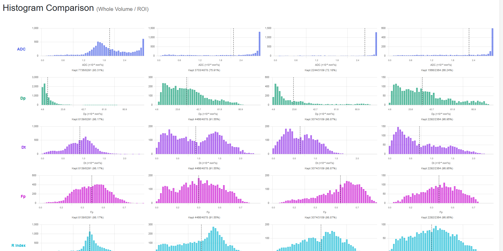
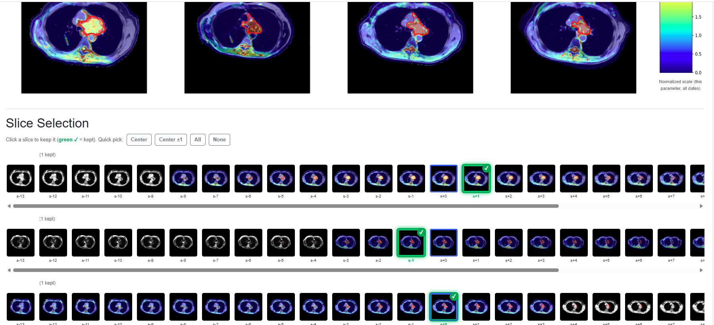
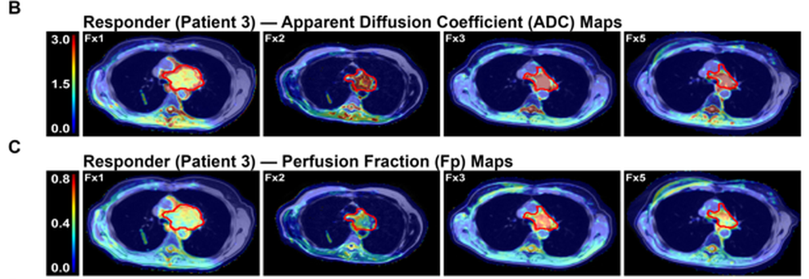
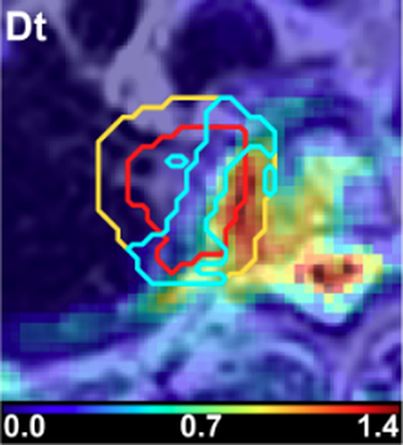
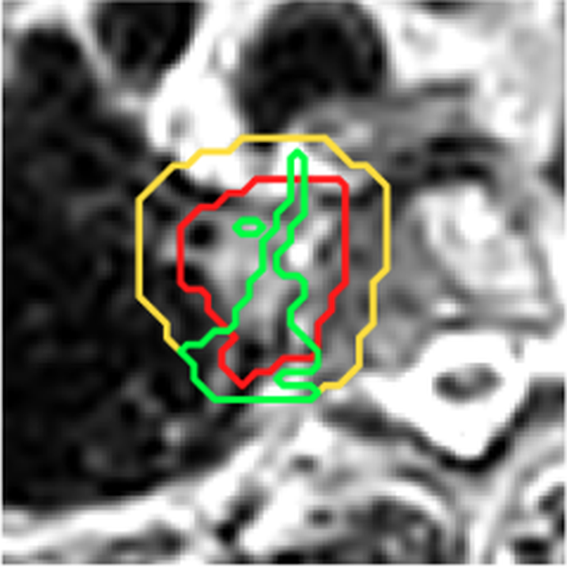

Brigham Young University · Provo, UTJan 2024 – Apr 2028 (Expected)
B.S. Biochemistry; Minor in Computer Science, with machine learning courses
GPA 3.99 · Science GPA 3.99 · MCAT 519 (96th percentile)
Russell Mercer
Biochemistry, clinical software, and AI at Brigham Young University
Biochemistry student preparing for medical school, who writes the software behind his research in radiation oncology, surface chemistry, and cryo-electron tomography. Enjoys learning new things and being challenged in new ways.
I joined the Radiation Oncology department at UT Southwestern in May 2026 and took over a diffusion MRI processing pipeline that had been developed by several graduate students. When the last student left, the software was still running from his personal account on a single GPU workstation. Its dependencies were tied to virtual environments that were difficult to reproduce, and the account was scheduled for deletion. A postdoctoral researcher hired for a different project was expected to take over the work, but the existing lung study could not be rerun without access to the original backend.
I rebuilt the pipeline web interface and made the pipeline much more streamlined, using Claude Code as a development assistant while reviewing and verifying the scientific and computational decisions myself. The application handles the processing workflow from raw hospital imaging files through final analysis. It retrieves patient scans from hospital network shares, repairs corrupted files, converts DICOM images to NIfTI, identifies acquisition protocols, corrects geometric distortion, applies two neural-network denoising steps, fits intravoxel incoherent motion (IVIM) and apparent diffusion coefficient (ADC) models, and registers images across treatment sessions. It also checks intermediate results and flags potential errors.
I built a bulk-processing system around the pipeline so researchers no longer have to run each patient and processing step individually. Users enter patient identifiers and select the processing steps they need. Each patient gets a separate tab showing progress through the workflow, while the application manages CPU and GPU scheduling, monitors available disk space, archives completed studies to department servers, and packages the results for export. These upgrades allowed us to process patient data much quicker, advancing the rate of research in the department.


The application processed all 76 patients in a pancreas study in approximately 2.5 days of continuous server time. For comparison, processing the 10-patient lung study using the previous workflow had taken approximately a week of manual work.
I also developed the web interface for reviewing and analyzing the resulting images. Its main features include:
I intentionally developed these user interface upgrades so that any researcher in the department can easily access, process, and evaluate data. After I finished, the server and application were entirely stand alone. You could get any information on any patient that you needed without having to have access to the back end of the server.
The project was subsequently transferred by hospital IT to the Radiation Oncology Application Team for further development toward universal use. They are now using this code in clinical studies. The MRI vendor also expressed interest in incorporating the processing workflow into its imaging system. I prepared the technical handoff documentation, including the remaining requirements for a clinical version, and trained the postdoctoral researcher who took over the project.
The pipeline code belongs to UT Southwestern and is tied to its internal systems, so it is not publicly available. The screenshots below show the web interface without patient-identifying information.





RefleXion is a new radiation therapy system that uses PET imaging to locate a tumor and track it during treatment, allowing the radiation beam to effectively follow the tumor in real time. Although the system had been used to treat patients for more than a year, its delivered dose had not yet been independently evaluated or compared with standard image-guided radiotherapy. Our study examined whether the technology delivered on its promise of more precise treatment.
After observing a treatment and an engineer walkthrough to understand the system, I developed an automated workflow to extract and analyze treatment-planning data. I wrote a C# script to pull dose information for every patient and plan from Aria-Eclipse (the hospital medical physics database) into organized spreadsheets. Because physicians use inconsistent names and groupings for anatomical structures, the script identifies most structures automatically and flags ambiguous cases for human review. A Python script then organizes the exports into analysis templates developed with Dr. Westover, and R scripts generate the figures and tables directly from the underlying data.


During the study, we also investigated whether respiratory motion could explain some of the differences we observed in organ doses. Post-treatment evaluations typically assume that organs remain in the same positions they occupied during simulation, even though the tumor moves with breathing. Since respiratory motion was not directly recorded, I created software that could reconstruct it using contours from each patient's backup plan. I then developed an algorithm to measure each organ's distance from the target and ran approximately 1,000 checks per patient to evaluate whether motion could account for the dose differences.
Across 17 patients, the PET-guided plans treated a target volume 19% smaller than the image-guided backup plans. The target was smaller in 15 patients and unchanged in two, with greater reductions among tumors that moved more during breathing. That precision came with trade-offs: the PET-guided plans produced a wider intermediate-dose region and higher maximum doses to the spinal cord and heart. Our analysis suggested these differences arose primarily during treatment planning rather than delivery, making them potential targets for improvement.

A physicist on the team shared our organ-dose findings with manufacturer contacts around the summer physics meeting. The company is now revising its post-treatment evaluation process for an upcoming release. The manuscript presents both the advantages and limitations of the technology, including findings that are less favorable than the commercially appealing narrative. After more than eight rounds of revision, including two complete restarts, it is now in final circulation among the co-authors.
Manuscript: Dosimetric Cost of a Smaller Target When Using Biology-Guided Radiation Therapy for Lung Cancer.
I worked with a team of medical physicists at UT Southwestern to investigate whether diffusion-weighted MRI could predict tumor response during radiation treatment. We studied 10 patients with ultra-central lung tumors receiving PULSAR (Personalized Ultrafractionated Stereotactic Adaptive Radiotherapy), a treatment in which radiation doses are delivered several weeks apart. Because responding tumors undergo changes in cellular structure that affect water movement, diffusion MRI may reveal treatment response before changes in tumor size become visible.

I processed and analyzed the patients' imaging data, developed methods to recover partially usable scans, and evaluated several diffusion models.
Our findings suggest that tissue diffusion and perfusion measurements can distinguish patients responding to treatment from those who are not as early as the third treatment fraction. This is particularly promising for PULSAR because it could allow physicians to assess treatment response while the radiation course is still underway, rather than waiting for changes in tumor size on follow-up imaging.

I also developed a thresholding method to identify potentially treatment-resistant regions within tumors, which could eventually help guide radiation dose adjustments.


The study included 10 patients, eight of whom had completed treatment at the time of analysis. The findings are preliminary and require validation against clinical outcomes.
Submitted manuscript: Onboard Intravoxel Incoherent Motion Diffusion-Weighted MRI Tracks Early Tumor-Volume Response in Ultra-Central Lung Tumors Treated With PULSAR.
Dr. Westover invented and patented a patient immobilization frame built from a composite that is nearly transparent to radiation. It has been in use at UT Southwestern for over a year and will be marketed to other centers, but no physics study existed to show how much dose the older frames were absorbing before the beam reached the tumor.
The cohort did not exist in any database. A patient had to have been treated on a specific machine, simulated in a legacy frame, and treated at least once in the new one, so I hand-screened about 50 patients' records and threw out warped scans, patients never treated, and unfamiliar frames. From what was left I picked 11 patients to mirror real practice: 3 spine, 3 prostate, 3 lung, and 2 abdomen, mixing fixed-field and arc therapy, some with titanium hardware, across two legacy frame types and both anterior and posterior target positions. I ran the attenuation calculations with the physicists, compared 12-field, 18-field, and arc plans with the frame masked to air against the frame present, and added ion-chamber bench measurements at 6, 10, and 15 MV across several beam angles.
The new frame reads at about −928 Hounsfield units on patient imaging against −713 for the legacy frame, which is the physical reason for everything that follows. Measured attenuation stayed under 2 percent anywhere away from the side rails, and crossed 3 percent only for beams passing through a rail at the lowest energy. Across the phantom and patient plans it stayed between 0.6 and 2.5 percent.
That number matters more than it sounds. Adaptive systems replan on the anatomy of the day and typically do not model the frame at all, so a frame this transparent can be used on current platforms without modeling it, and a legacy frame cannot. I wrote the first draft and the manuscript is in final circulation among co-authors. The limits are plain: eleven patients at one institution, with a dosimetric endpoint rather than a clinical one.
Working title: Radiolucent Stereotactic Body Frame for Online Adaptive Radiation Therapy.
The device diagram comes from Dr. Westover's patent and stays off this site until he says otherwise.

The lung study produced a threshold tool that outlines treatment-resistant tissue, but nothing tied it to what happened to the patients. Dr. Deng brought me onto a pancreas study to start closing that gap: do the same diffusion measurements track how pancreatic tumors respond to stereotactic radiation?
I ran all 76 patients through the pipeline I had rebuilt, and 23 of them turned out to have both complete diffusion imaging and outcome data. I did the chart review for response at three months and for local and distant failure over time, since most three-month results in this last-line population were stable or not evaluable. A Python script rebuilds each patient's plot and notes from the chart-review sheet, so adding a patient does not mean redrawing anything.
One early signal is worth the work: a patient who failed both locally and distantly about eight months after treatment showed tissue diffusion falling by the third fraction, the opposite of what a dying tumor does, while a patient with stable disease showed it rising. In principle a physician could have seen that early enough to change the plan. The trends run opposite to the lung study, and I think the spacing explains it, since these patients were treated every two or three days rather than weeks apart, leaving less time for tissue remodeling between pulses. Analysis is still underway.
Turning thousands of tilted images of a frozen cell into a three-dimensional map means chaining together a dozen specialized programs, each with its own settings and its own ways of failing. Learning that chain normally takes months. Can a general-purpose AI coding agent carry a newcomer through it without removing the understanding the work is supposed to build?
The test set is 39 tilt series of cryo-focused-ion-beam-milled E. coli in exponential growth, collected on a Krios at 300 kV. The agent proposes each step, installs and configures the tool, and runs it, while a human approves, overrides, or corrects every parameter. The chain runs from motion correction through alignment and reconstruction, missing-wedge correction, template matching, classification, and subtomogram averaging, ending in an analysis of whether ribosomes sit alone or in pairs and chains. Every recommendation gets logged as accepted, overridden, or an error a human caught, which is what makes the claim measurable rather than anecdotal. The workflow is packaged as a reusable agent skill so the next person in the lab starts further along. This is joint work with Chitral Chatterjee in Dr. Jensen's lab.
Ongoing. I presented this as a poster, Can an AI Agent Collapse the Cryo-ET Learning Curve?, at the Utah CryoEM Symposium at BYU on October 8, 2026. A manuscript is in preparation.
I am an officer of the BYU AI Association and lead its weekly AI in Research meeting, a group working out how researchers in different fields can use these tools without handing over the judgment that makes the work theirs. I wrote the proposal for the group, which is public as the AI-In-Research repository.
What I bring to it is mostly evidence rather than opinion. I built a clinical imaging application with an AI coding agent in weeks instead of months, and I am running a controlled test in the Jensen Lab of where an agent helps and where it gets a pipeline wrong. Both sides of that show up in the meetings.
I am also honest about the cost. These tools make research faster, and they change how people think, not only what they produce. As more writing and reasoning gets handed over, the average output gets more capable while the individual gets less practiced: less nuance, less argument, less of the slow work understanding is made of. Holding the acceleration and the cost at the same time is why I would rather help shape how AI enters science than just use it.
I attended the AI for Social Innovation Conference at Aspen Grove on October 21, 2026, run by BYU's Ballard Center, as the BYU AI Association's representative. The organizers wanted someone from the association and I was given a seat at the Data Sovereignty and Inclusion working table, alongside a UN ambassador, the chief operating officer of a Māori media organization that built a community-owned speech model, and people from industry and other universities. The table's question was who owns community data, the models trained on it, and the value those models create.
I release research tooling under the Mercer Science organization on GitHub as it becomes good enough for someone else to use.
paper-engine is the main one: skills, scripts, and strategies that take an academic paper from an idea toward a draft. It covers the parts that are mechanical but easy to get wrong, such as keeping an outline, figures, statistics, and references consistent with each other while the draft changes underneath them. I built it out of the manuscript work at UT Southwestern, where I rewrote one paper more than eight times.
github-ai-project-manager is a set of skills and hooks that let an AI command-line agent maintain a research project on GitHub on its own, so the record of what happened keeps up with the work.
AI-In-Research holds the proposal behind the BYU AI Association group I lead.
More will go up as it stops being specific to my own machine. The repositories are at github.com/mercer-science.
A paper tells you what worked. It rarely tells you why the authors tried that, what they ruled out first, or which step everyone in the field quietly knows to do differently. The Cryo-EM Tacit Knowledge Database collects that reasoning while the authors still remember it, through an AI agent that interviews them.
Dr. Jensen originated the idea and I am building it. Ongoing, and nothing is working yet.
I release research tooling under the Mercer Science organization on GitHub as it becomes good enough for someone else to use.
paper-engine is the main one: skills, scripts, and strategies that take an academic paper from an idea toward a draft. It covers the parts that are mechanical but easy to get wrong, such as keeping an outline, figures, statistics, and references consistent with each other while the draft changes underneath them. I built it out of the manuscript work at UT Southwestern, where I rewrote one paper more than eight times.
github-ai-project-manager is a set of skills and hooks that let an AI command-line agent maintain a research project on GitHub on its own, so the record of what happened keeps up with the work.
AI-In-Research holds the proposal behind the BYU AI Association group I lead.
More will go up as it stops being specific to my own machine. The repositories are at github.com/mercer-science.
Every one of the radiation oncology studies ran on data that a hospital generated for treating patients, not for analysis. Structures are named differently by each physician, sessions go missing, file names carry no information, and the same measurement means different things on different machines. You cannot ask a clinical question until something cleans that up, and doing it by hand means the answer changes every time you redo it.
C# inside the treatment planning system. A script that walks every patient and plan, finds the relevant structures despite inconsistent naming, pulls the dose data into organized spreadsheets, and asks a human only when it genuinely cannot resolve a duplicate.
Python for the parts with judgment in them. Filtering raw exports into templates designed with the physician; reconstructing respiratory motion from backup-plan contours and running about 1,000 geometric checks per patient; recovering imaging dates for files whose names had lost them; rebuilding per-patient outcome plots from a chart-review sheet.
R for everything that becomes a figure or table. Every panel and every table in those manuscripts generates from the raw data. About 20 figures were drafted for one paper and cut to a main set plus supplements, and six tables build themselves.
When I found the exporter bug that had been capping a key measurement, fixing it meant rerunning the pipeline, and every figure in the paper rebuilt correctly. That is the argument for writing the pipeline instead of the figure. The code itself belongs to UT Southwestern and is tied to its systems, so it is not public.
A full-stack Java chess application built for C S 240, Advanced Software Construction: game logic, a server with a REST API and WebSocket play, user authentication, a database layer, and a terminal client, with unit and integration tests throughout. It is coursework rather than research, and it is the project where I learned to design an interface between parts of a system before writing either side. The repository is on my personal GitHub.
Computer science minor with a machine learning emphasis, alongside the biochemistry major.
Completed: C S 111 Introduction to Computer Science, C S 235 Data Structures, C S 236 Discrete Structures.
In progress, Fall 2026: C S 240 Advanced Software Construction, MATH 213 Elementary Linear Algebra, MATH 215 Computational Linear Algebra.
Planned: C S 312 and C S 470, which carry the machine learning emphasis.
Also taken: STAT 121 Introduction to Statistical Data Analysis.
The languages I use on real projects are Python, R, C#, Java, and shell. Most of what I know about building software, though, came from the clinical work rather than from coursework: inheriting a system nobody could run, and having to make one that someone else could.

Second author. Ralph AD, Mercer RW, Hall SB, Butikofer BC, Collins CS, Sturgill CJ, Minson PS, Stefik M, Stowers KJ. Langmuir 2026;42(6):4475–4488. doi:10.1021/acs.langmuir.5c05182
Metal-organic framework films usually need a self-assembled monolayer to nucleate on. We grew copper and copper-zinc films directly on a bare substrate by spin coating at ambient pressure, then showed how synthesis temperature controls coverage, crystallite size, and how much of the second metal ends up in the film. I did film synthesis, electron microscopy, and film-thickness analysis.
First author. Submitted to the International Journal of Radiation Oncology, Biology, Physics.
Ten patients with ultra-central lung tumors received radiation in five pulses about three weeks apart, with diffusion imaging captured on the machine before every fraction. We asked whether those scans, which nobody was using, can show a tumor responding before it shrinks. The biexponential model fit the onboard signal better than the standard one, and tissue diffusion separated responders from non-responders by the third fraction where the conventional measure did not.
First author.
Biology-guided radiotherapy follows the tumor's live PET signal during delivery instead of padding the target with margin for breathing, so the treated volume can be smaller. Across 17 patients we measured how much smaller, and what it costs: the target came out 19 percent smaller, and the reduction grew with how far the tumor moved. The trade is a wider intermediate-dose region and higher spinal cord and heart maxima, which originate in planning rather than in delivery.
First author.
Adaptive treatment systems replan on the anatomy of the day, but they typically ignore the frame the patient is lying in. We characterized a new low-density frame built to be dosimetrically negligible, with ion-chamber measurements at three energies and four gantry angles plus calculations across eleven patient plans. Attenuation stayed under 3 percent everywhere except beams crossing a side rail, which means the frame can be used on current adaptive platforms without modeling it in the dose calculation.

Co-author.
Forty-seven patients with locally advanced lung cancer were treated with one online adaptive session a week, 227 sessions in all, with both the adapted and the scheduled plan computed on the same daily anatomy. Tumors regressed in every histology group, and adaptation improved both target coverage and organ sparing. The benefit rotated over the course, from recovering coverage early to sparing lung, esophagus, and heart late, and no pre-treatment feature predicted it well enough to skip the weekly cadence.

Co-author.
Forty patients treated with stereotactic radiation for early-stage lung cancer on an adaptive platform, with three plan states compared on the same daily anatomy at every fraction: the approved plan, the scheduled plan, and the adapted plan actually delivered. The question is which patients gain enough from adaptation to justify a workflow that roughly doubles time on the table, and whether anything measurable at simulation predicts it. Across 253 fractions, the adapted plan improved target coverage in 73 percent and spared the esophagus in 69 percent.
First author, with Dr. Jie Deng.
Seventy-six patients processed through the pipeline, 23 of them with both complete diffusion imaging and outcome data, paired with chart review for response and failure. It is where the lung study's threshold tool starts being tested against what actually happened to patients, on a schedule that treats every two or three days rather than weeks apart.
First author, with Chitral Chatterjee and Dr. Grant Jensen. Presented as a poster at the Utah CryoEM Symposium, October 8, 2026.
Cryo-electron tomography processing is a chain of a dozen specialized programs that takes months to learn. We put a general-purpose AI coding agent at the controls of that chain on 39 tilt series of E. coli, with a human approving or overriding every parameter, and logged each recommendation as accepted, overridden, or an error a human caught. The point is to measure where the agent genuinely helps a newcomer and where it needs someone who already knows the science.
Co-author, Stowers Lab.
The decomposition chemistry of metal-organic framework films studied in the lab's ultra-high-vacuum chamber, near 10⁻¹⁰ Torr with X-ray photoelectron spectroscopy and mass spectrometry on the same system. I helped build and maintain that chamber, and I am still contributing to the manuscript although my position in the lab ended in May 2026.
Does the adhesin layer on the surface of B. henselae physically block the secretion system underneath it? A published hypothesis says yes, from phenotypes alone, and no tomogram of any species in this genus exists. I scoped and proposed the project and Dr. Jensen approved it. Nothing has been cultured and no grids have been frozen; the work starts once the biosafety committee approves the protocol. Full write-up on the Physical Sciences tab.
What the invasion machinery of this parasite looks like in three dimensions, which would be the first cryo-electron tomography in the genus. It needs a focused ion beam milling workflow that does not exist yet for any Babesia, so building one is part of the project. Nothing ordered, nothing cultured, no grids. Full write-up on the Physical Sciences tab.
An AI agent that interviews the authors of cryo-EM papers to collect the reasoning a paper never carries: what they ruled out first, why they tried that, and which step the field quietly does differently. Dr. Jensen originated the idea and I am building it. Nothing is working yet.
Jensen Lab, BYU, August 2026 to present. Two cryo-electron tomography projects I scoped and proposed, and that Dr. Jensen approved: the surface architecture of Bartonella henselae, asking whether its adhesin layer blocks the secretion system underneath, and the apical complex of Babesia duncani, which would be the first tomography in that genus. Both are ongoing and in biosafety approval, so nothing has been cultured or frozen yet. I also run the lab's AI cryo-ET agent project, which I presented as a poster at the Utah CryoEM Symposium in October 2026.
Stowers Lab, BYU, April 2024 to May 2026. Metal-organic framework thin films grown by spin coating and characterized by electron microscopy, published in Langmuir with me as second author. I helped build and maintain a flow reactor and an ultra-high-vacuum chamber running near 10⁻¹⁰ Torr with X-ray photoelectron spectroscopy and mass spectrometry, and trained two newer students on spin coating and microscopy. A second manuscript on the vacuum-chamber chemistry is in preparation.
Bench training. Vitrobot and Krios through Thermo Fisher's Resolution Evolution course, bacterial culture and plasmid work in the Jensen Lab's apoferritin bootcamp, electron microscopy and film analysis in the Stowers Lab, plus the biochemistry lab sequence at BYU through CHEM 584, a master's-level methods course.

Provo, UT · rmercer2@byu.edu · linkedin.com/in/russell-mercer · orcid.org/0009-0003-6387-969X · github.com/mercer-science